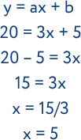
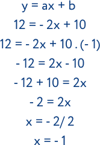
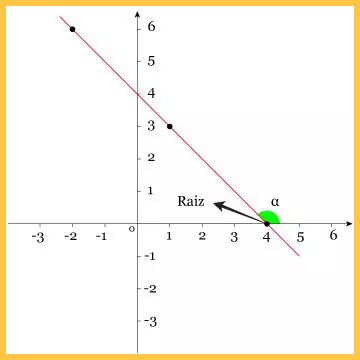

FUNÇÃO AFIM
A função afim é uma norma matemática que relaciona as variáveis de uma equação, ou seja, a dependência de um elemento em relação ao outro. Por isso, a função de primeiro grau é utilizada para definir a relação entre as variáveis x e y. Isso porque para cada valor dado a x, determinará o de y. O seu valor sempre dependerá de x. Neste tipo de função, o número a é chamado de coeficiente de x e representa a taxa de crescimento ou taxa de variação da função. Já o número b é chamado de termo constante. Essa equação é definida como de primeiro grau, pois a maior potên- cia da variável x é igual a 1 (x¹). Isso ocorre porque o grau de uma fun- ção é dado pelo maior expoente que a variável assume. Isto é, se tiver expoente 1 é identificada como de primeiro grau. Se tiver expoente 2 é identificada como função de segundo grau. y = ax + b ou f(x) = ax +b, sendo a e b números reais
.png)
RESOLUÇÃO
O principal objetivo de uma função de primeiro grau é especificar o valor da variável desconhecida, ou seja, da incógnita. Elas podem ser representadas por qualquer letra do alfabeto, entretanto as mais aplicadas são x, y e z. Assim:
De acordo com os conceitos matemáticos, quando um número da equação passa para o outro lado do sinal de igual, deve-se inverter a operação. Ou seja, se tiver subtraindo, mudará somando. Se tiver multiplicando, mudará dividindo e vice- versa. No exemplo acima, ao mudar o número 5 para depois do sinal de igual, ele passou para subtrair o valor de y (20). Já o 3, que multiplica o x, mudou para dividir o resultado da subtração de y. As expressões em que a variável x é negativa, deve-se multiplicar todos os componentes da equação por - 1
GRÁFICO
A função de primeiro grau é caracterizada nos gráficos por uma reta. Essa reta pode ser crescente ou decrescente, dependendo dos valores do coeficiente angular (a) e do ponto de intersecção com o eixo y do plano cartesiano (b).
Função Crescente: (a > 0)
Quando a for maior que zero (a > 0), a função será positiva e, consequentemente, crescente. Isso acontece porque à medida que os valores de x aumentam, os de y também crescem. No processo de construção do gráfico, deve-se determinar valores reais de x para encontrar os de y. Entenda no plano cartesiano da função y = 2x – 1 (a = 2 e b = - 1). Na tabela a seguir atribuímos os valores de x = 1 e x = 2:

Função Decrescente: (a < 0)
Quando a for menor que zero (a < 0), a função será negativa e decrescente. Isso acontece porque nos momentos em que os valores de x aumentam, os de y diminuem. Veja no gráfico da função y = - x + 4 (a = -1 e b = 4):
Além disso, o gráfico da função de segundo grau também apresenta outras propriedades como:
• Nos momentos em que a função for crescente, o ângulo entre a reta e o eixo x será menor que 90° (agudo);
• Nos momentos em que a função for decrescente, o ângulo entre a reta e o eixo x será maior que 90° (obtuso);
• Apenas um ponto corta o eixo x, a raiz da função. Para determiná-la basta considerar y = 0;
• Somente um ponto corta o eixo y, o valor de b.
Para melhorar seus estudos...
Matemática pode ser um conteúdo difícil. Para aumentar seu aprendizado, acesse ao mapa mental e a playlist de vídeo aulas sobre este assunto:
Mapa mental playlist de videoaulas